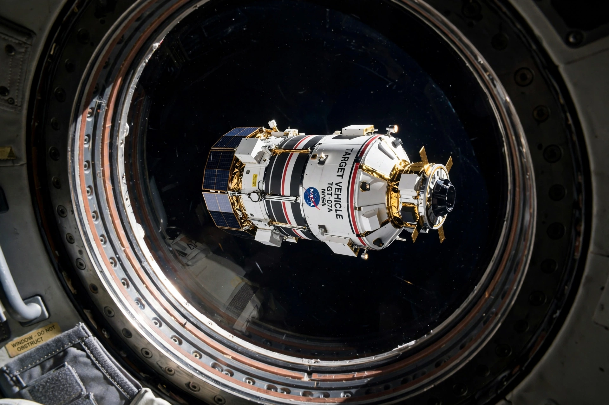

Gemini 8
From Wikipedia, the free encyclopedia
| Gemini 8 | |
|---|---|
| Crew | Neil Armstrong, David Scott |
| Launch | 16 March 1966 |
| Duration | 10 hours, 41 minutes |
| Milestone | First docking in space; first US in-flight emergency |

Rendezvous with Agena.Gemini 8 was the sixth crewed flight of Project Gemini, launched on 16 March 1966 with Neil Armstrong commanding and David Scott as pilot. It achieved the first docking of two vehicles in space, linking with an uncrewed Agena target — and then survived the first life-threatening emergency of American spaceflight.
About half an hour after docking, the joined craft began to roll. The astronauts undocked, which only made it worse: a thruster on Gemini's own control system had stuck on, and the capsule spun up toward one revolution per second, blurring vision and nearing blackout. Armstrong shut down the orbital thrusters and used the separate reentry control system to stop the spin — burning the fuel reserved for a safe return and forcing an emergency splashdown in the Pacific, the programme's only aborted mission.
Significance
The calm under mortal pressure cemented Armstrong's reputation and, historians note, his claim to command the first lunar landing; Scott's planned spacewalk was lost, but the mission proved docking — Apollo's central manoeuvre — and taught NASA hard lessons about fault isolation. The Agena, left in orbit, was later visited again by Gemini 10.
See also
Neil Armstrong · David Scott (astronaut) · Project Gemini · Gemini 4